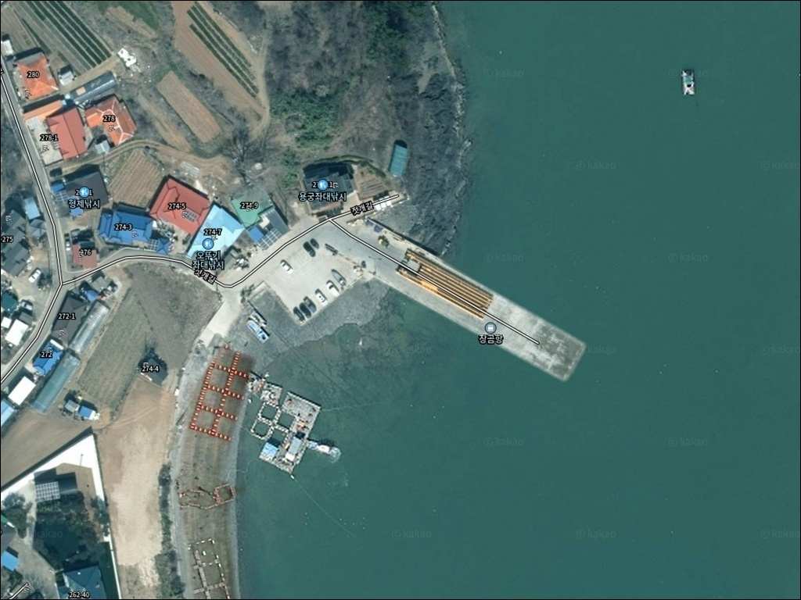
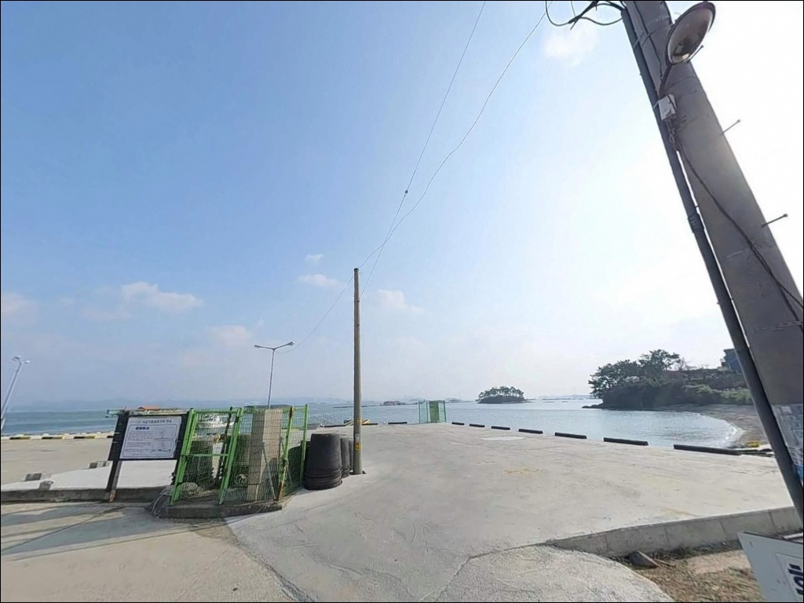
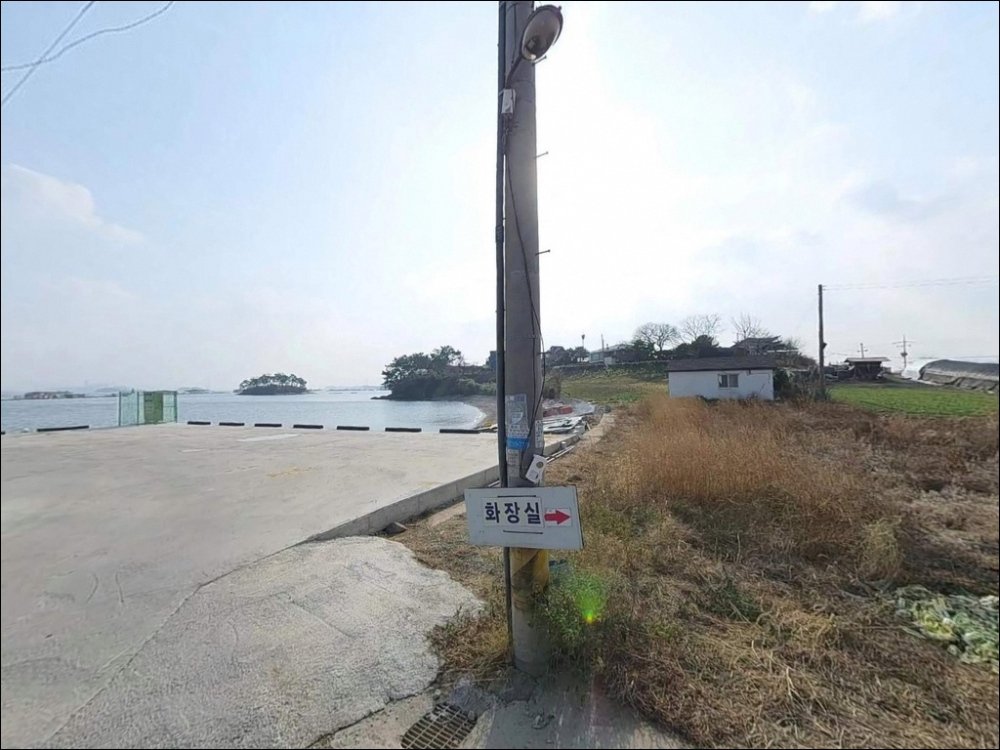
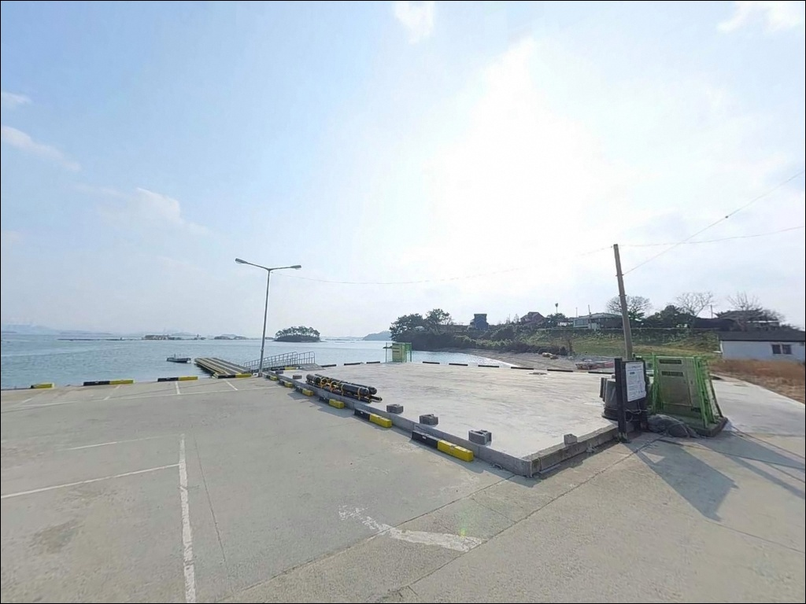
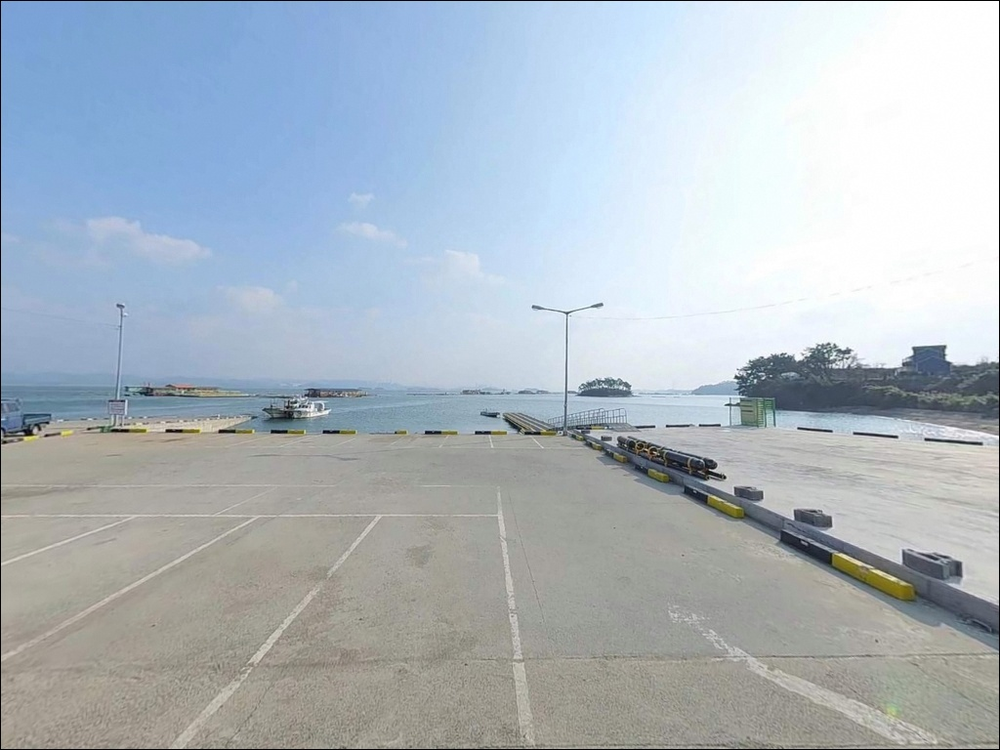
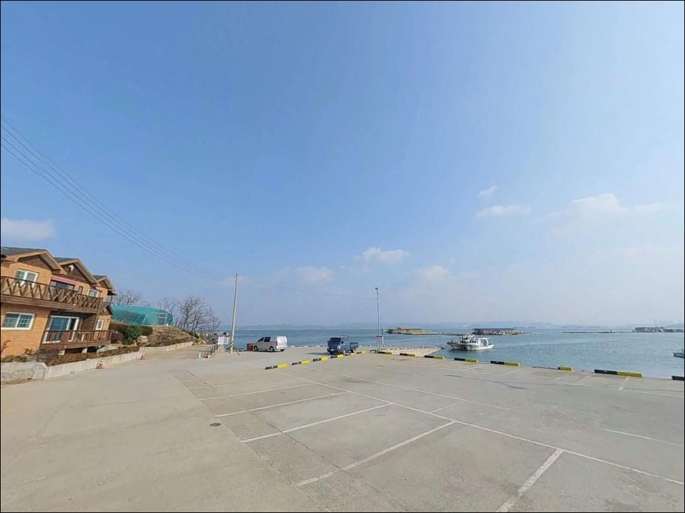
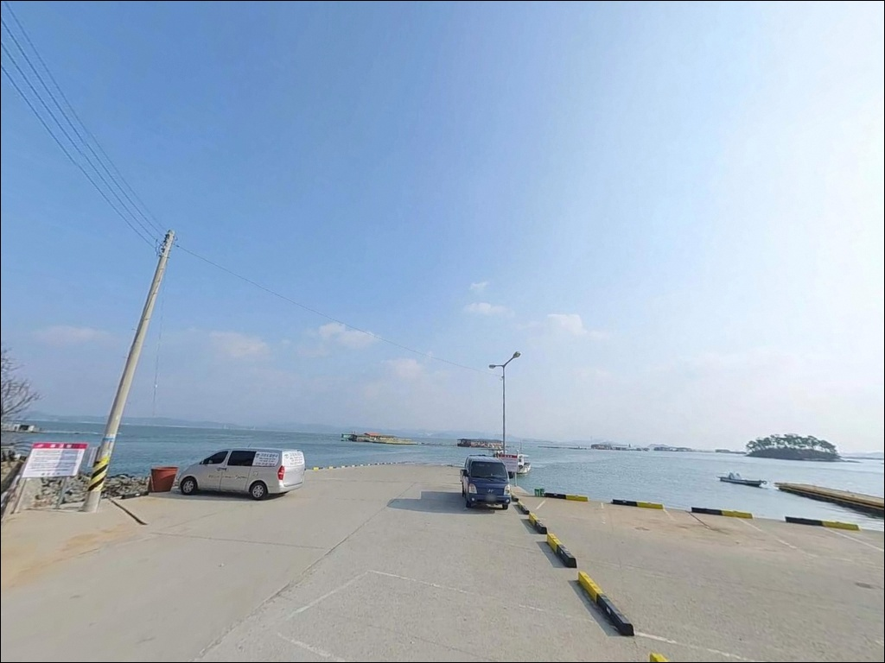
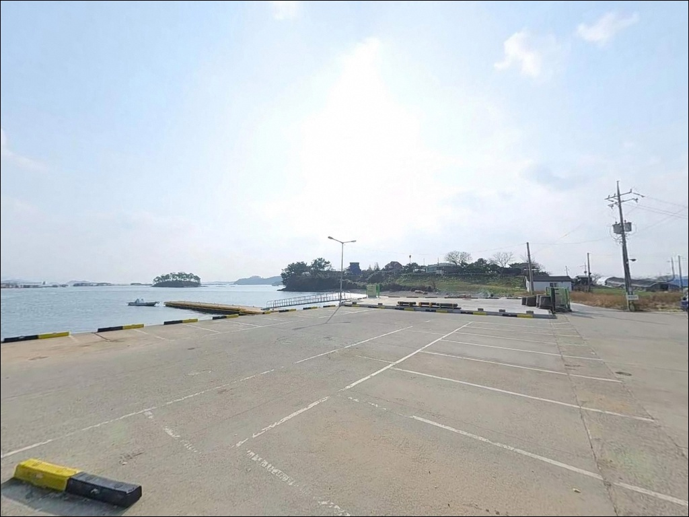
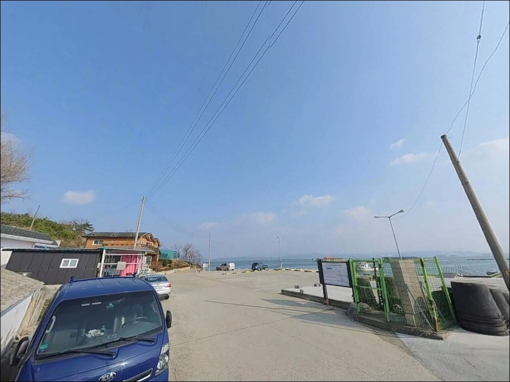

장곰항, 충남 태안군 바다 감성 깊어지는 차박, 낚시 포인트
이 페이지에는 광고(제휴 링크 포함)가 있으며, 광고 링크를 통해 구매하면 운영자가 판매 수익 또는 수수료를 받을 수 있습니다. 포인트 사진: 카카오맵 스카이뷰·로드뷰. 이 페이지의 지도·사진 이미지는 카카오맵의 실제 서비스 이미지와 다를 수 있습니다.


포인트 안내
장곰항
충남 태안군 고남면 누동리 1505-5
장곰항에서 가장 흔히 저지르는 실수는
물때 확인 없이 출발하는 것입니다.
천수만 내만에 자리한 구조 특성상
간조 시 수심이 급격히 낮아져,
채비를 내릴 자리 자체가 사라지는 상황을
맞닥뜨리게 됩니다.
물때를 맞추지 않으면 이 포인트는 시작조차 되지 않습니다.
충남 태안군 고남면 누동리,
안면도 최남단에 가까운 장곰항은
장곰포 선창을 중심으로
방조제·갯바위·수로가 한 구역으로 묶인
복합 낚시권입니다.
내만과 외해 방향이 만나는 지점에 위치해
다양한 낚시 방식을 유연하게 병행할 수 있는
구조를 갖추고 있습니다.
이 글은 장곰항의 지형 구조, 진입 여건,
물때 판단 기준, 낚시 스타일별 적합성에 집중합니다.
조황 단정이나 특정 어종 보장은
이 글의 범위에 포함되지 않습니다.

1. 진입 동선과 포인트 접근성
장곰항은 안면읍에서 영목항 방면으로 이어지는
안면대로를 기간 도로로 삼고,
고남면 내부 마을 소로를 통해 선창까지 접근하는 구조입니다.
누동리 외곽 해안까지 이어지는 진입로는
폭이 좁아지는 구간이 포함되어 있어,
승용차·소형 SUV 기준으로 움직이는 편이 수월합니다.
대형 차량이나 캠핑 장비를 실은 차량이라면
출발 전 위성지도로 진입로를 먼저 살펴보는 것이 좋습니다.
소규모 포구 특성상 선창 주변 회차 공간이
넉넉하지 않을 가능성이 있어,
후진 진출이 어려운 차량은 갓길 여건도 함께 확인해야 합니다.
주차는 방조제 제방 아래 노지 공간이나
선착장 주변 공터를 활용하는 방식이 일반적인 것으로 보입니다.
어선 진출입 동선을 막지 않는 자리가 우선이며,
성수기·주말에는 낚시객 차량이 집중될 수 있어
이른 도착이 유리합니다.

2. 차박 환경과 야간 체류 여건
장곰항의 차박은 본격적인 거점 차박보다
낚시 대기와 휴식을 병행하는 보조 개념으로
접근하는 편이 현실적입니다.
선창 주변은 민가 밀집도가 낮고
야간 차량 통행이 적은 편이라,
조용한 환경에서의 야간 대기에는
나쁘지 않은 조건입니다.
구매항·장곰포 방조제 일대가 인접해 있어
성수기나 주말에는 낚시객 이동이 늘어날 수 있습니다.
가로등 수가 제한적일 수 있어
개인 조명 장비는 필수입니다.
외해 방향으로 열린 구간에서는
바람 영향을 받을 가능성도 있으므로,
출발 전 기상 예보의 풍향을 반드시 확인해야 합니다.
차박을 함께 계획하고 있다면
선창 인근 주차 가능 여부를
현장에서 직접 확인하는 것이 안전합니다.
공간이 여의치 않을 경우를 대비해
인근 구매항 일대를 보조 후보로 염두에 두는 것이
좋습니다.


3. 주변 편의시설 및 인프라 현황
장곰항 입구 인근에 낚시점이 운영되는 것으로 알려져 있어,
미끼나 소품이 부족하다면
이곳을 먼저 확인하는 것이 편리한 동선입니다.
다만 영업 현황은 방문 전 직접 확인하는 편이 안전합니다.
반경 3km권에서는 고남면 소재지 방향으로 이동하면
소형 마트와 주유소를 이용할 수 있을 것으로 보입니다.
소규모 어촌 면 단위 인프라 특성상
영업 여부가 일정하지 않을 수 있어,
식수·얼음·연료는 출발 전에 갖춰 두는 편이
안전한 준비 방식입니다.
반경 10km권에서는 영목항이 대표 거점입니다.
고남면의 대표 어항으로 편의점·식당 등
기본 인프라가 갖춰져 있으며,
부족한 소품이 생겼을 때
이 동선을 활용하는 편이 효율적입니다.

4. 좌대 낚시를 모르고 가면 기대가 빗나갑니다
장곰항에서 가장 먼저 확인해야 할 것은 물때입니다.
천수만 내만 구조상 조수 간만의 차가 크고,
간조 시에는 수심이 매우 낮아지는 서해 갯벌 지형의 특성이
그대로 적용되는 곳입니다.
바다타임에서 누동리 기준 물때를 확인하고
들물 시간대에 맞춰 진입하는 것이
이 포인트의 기본 출조 전략입니다.
장곰항은 좌대낚시 시설이 운영되는 포인트로도 알려져 있습니다.
형제낚시 좌대 등 바다 위 좌대를 활용한
주꾸미·갑오징어 에깅 패턴이 가을 시즌에 이 포인트의
대표적인 낚시 방식으로 자리 잡고 있습니다.
도보 연안낚시만을 기대하고 찾는다면
현장 여건이 예상과 달라질 수 있어
사전 확인이 필요합니다.
기상 예보도 당일 아침 다시 한번 확인하는 것이 좋습니다.
서해권은 물골이 강하게 형성되는 구간이 있어
수문·수로 주변 워킹 루어 시에는
빠른 조류 변화에 대비한 안전 확인이 먼저입니다.
방파제와 선창은 어선 작업 공간이기도 하므로
어구와 로프에 채비가 걸리지 않도록 자리를 잡고,
야간에는 헤드랜턴과 구명조끼를 반드시 착용해야 합니다.

5. 지형 기반 낚시 여건 분석
장곰항 일대는 장곰포 선창, 장곰포 방조제,
장곰 갯바위, 고남수로가
하나의 낚시권으로 묶이는 복합 구조입니다.
내만(천수만 방향)과 외해 방향이 만나는 지점에 위치해,
내항성 어종과 회유성 어종을 함께 기대할 수 있는
지형 조건을 갖추고 있습니다.
바닥은 뻘·사니질 혼합으로 구성된 서해 내만형 구조입니다.
이 유형의 지형에서는 원투낚시로 바닥층을 공략할 때
붕장어·광어·도다리 계열이 기대 어종으로 꼽힙니다.
방조제 중간 구간 수심은 3~4m 수준으로 추정되며,
방조제 끝단이나 수로 수문 인근에서
수심 변화와 조류 흐름이 집중되는 구간이
형성될 가능성이 있습니다.
장곰항은 들물 시간대에 맞춰 진입해야
조력을 확보할 수 있는 내만형 포인트입니다.
방조제와 선창을 함께 활용하면
조류 방향에 따라 낚시 자리를 유연하게 선택할 수 있습니다.


6. 포인트에 어울리는 낚시 스타일
이 포인트에서 가을 시즌에 가장 많이 활용되는 스타일은
주꾸미·갑오징어 에깅입니다.
9월부터 11월 초중순이 활성기로,
방조제 석축 주변이나 선창 인근을
에기로 천천히 탐색하는 방식이 이 지형 구조에 잘 맞습니다.
물이 잔잔해지는 정조 전후가 채비 컨트롤에 유리한 타이밍입니다.
원투낚시도 이 포인트의 지형 조건에 맞는 스타일입니다.
청갯지렁이 미끼를 활용해 바닥을 공략하는 방식으로,
붕장어는 야간에 들물이 차오를 때 활성도가 올라오는 경향이 있습니다.
채비를 멀리 던진 뒤 바닥을 천천히 끌어오는 방식이
이 유형의 뻘·사니질 지형에 어울립니다.
고남수로·가지수로 구간에서는 농어 워킹 루어를 노려볼 수 있습니다.
수문 주변에 물골이 형성되는 구간은
조류가 집중되어 루어 반응이 올라오는 구조입니다.
소형 미노우나 소프트베이트를 활용한 탐색이 효율적이며,
우럭·광어 패턴으로도 접근이 가능합니다.
찌낚시로는 만조 전후 숭어·학꽁치 등 회유성 어종을
노려볼 수 있습니다.
사리 전후 조류가 활성화되는 타이밍에
방조제 내항 쪽 잔잔한 수면 구간이
릴찌낚시나 민장대로 탐색하기 좋은 자리입니다.
최신 조황은 방문 전에 반드시 검색해 보시기 바랍니다.

7. 대안 포인트와 플랜 B 동선
장곰항 여건이 여의치 않을 때
가장 먼저 이동할 대안은
구매항입니다.
장곰포와 바로 인접한 위치라
이동 거리가 짧고,
선착장 도보 낚시가 가능한 구조를 갖추고 있습니다.
우럭·노래미·주꾸미 등 유사한 어종 구성을
비슷한 방식으로 노릴 수 있습니다.
같은 해안선에서 낚시 포인트를 이어 탐색하고 싶다면
고남수로·가지수로 구간을 선택지로 넣어 두는 것이 좋습니다.
루어낚시 포인트로 별도 인지되어 있는 곳으로,
농어·우럭·광어 워킹 스타일에 적합한 물골 구조가
발달해 있는 것으로 알려져 있습니다.
장곰항에서 조류가 너무 약할 때 이어 탐색하기 좋은 구간입니다.
인프라 기반이 필요하다면
차량으로 10분 안팎 거리의 영목항을 기점으로 삼는 것이
효율적입니다.
고남면의 대표 어항으로 편의점·식당이 갖춰져 있고
선상낚시 출조도 활발하게 이루어지는 곳이라,
장곰항 탐색 후 영목항을 거점으로 삼는 동선이
이 권역에서 가장 안정적인 이동 경로입니다.

이 포인트, 물때만 맞추면
달라 보입니다
가을 주꾸미·갑오징어 에깅을 즐기거나
원투낚시로 바닥층을 탐색하는 스타일이라면
장곰항의 지형 조건은 잘 맞는 편입니다.
방조제·선창·갯바위·수로를 함께 아우르는
복합 낚시권이라 상황에 따라 자리를 유연하게 바꿀 수 있고,
온라인 정보가 많지 않은 만큼
직접 탐색해야 하는 발품형 포인트이기도 합니다.
반면 편의시설을 기대하고 간다면
현장에서 실망할 수 있습니다.
자급 준비 없이 찾아갈 경우
미끼 보충이나 식수 확보에서 어려움이 생깁니다.
물때 확인, 자급 준비, 진입로 사전 점검,
이 세 가지를 갖추고 간다면
기대 이상의 낚시를 즐길 수 있는 곳입니다.
조용한 내만 포구에서 들물을 기다리며
채비를 점검하고 하룻밤을 보내는 차박 여행자라면,
물때만 잘 맞추면 낚시와 차박 모두
만족스러운 출조가 될 수 있습니다.